1
iPhone 桌面 · 五个入口
iOS 快捷指令打开表单链接，配上独立图标和名字，像原生 App 一样用
- 零摩擦：记一笔点开就是金额输入框，不需要在飞书里翻表
- 各有各的封面：每个表单配了主题图和一句话文案，记录这件事本身有点仪式感
- 记录分流：记什么进什么表，后台自动归类，不用事后整理
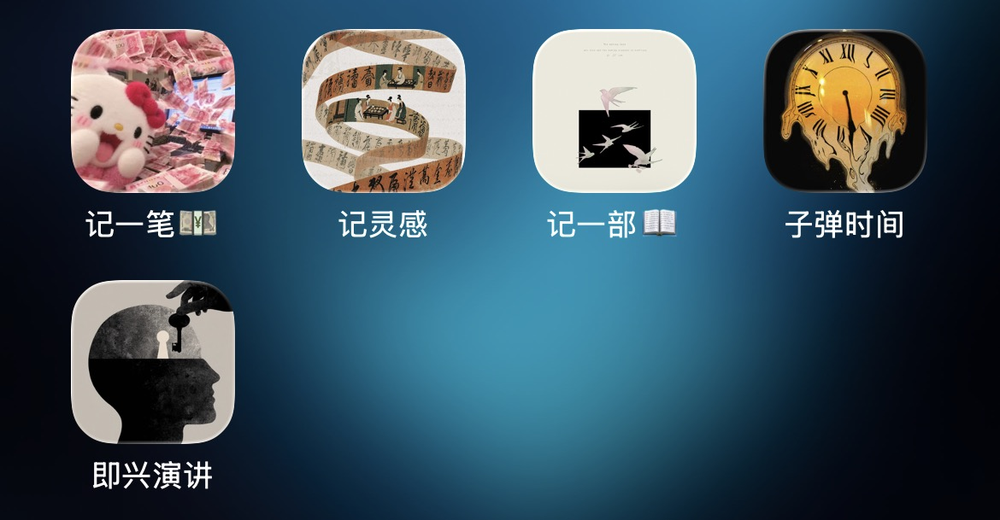
不是一个个孤立的工具，而是一套跑在日常里的闭环：iPhone 快捷指令一键进入表单，开销、灵感、书影、子弹时间全部汇入同一个飞书多维表，Windows 桌面挂件直接读写表数据，黄金行情每天自动播报 —— 脏活交给自动化，人只负责记那一笔
桌面放五个快捷指令图标，点开就是对应的飞书表单 —— 记一笔、记灵感、记一部、子弹时间、即兴演讲，各自独立封面与文案，没有「先找 App、再找表格」的摩擦
iOS 快捷指令打开表单链接，配上独立图标和名字，像原生 App 一样用

四个表单都只留最少必填项，点下面的链接可以直接体验（表单提交后进入对应多维表）—— 手机截图即实际使用界面
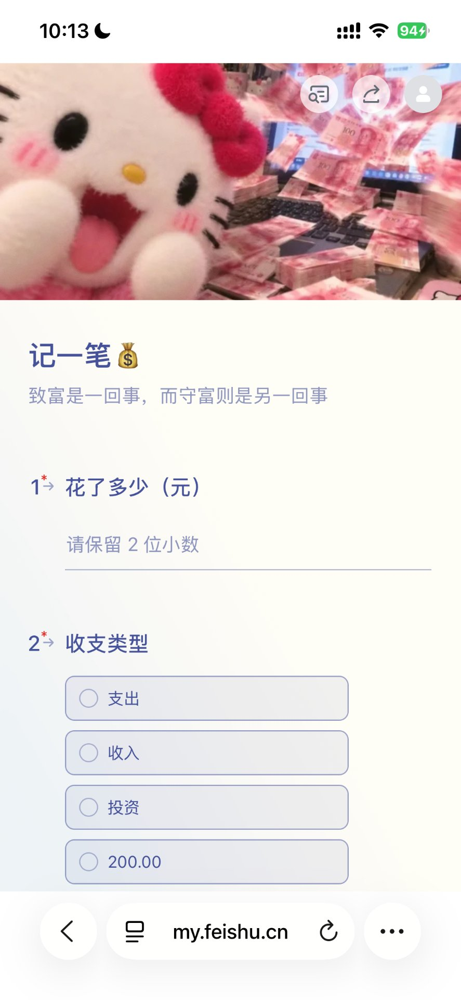
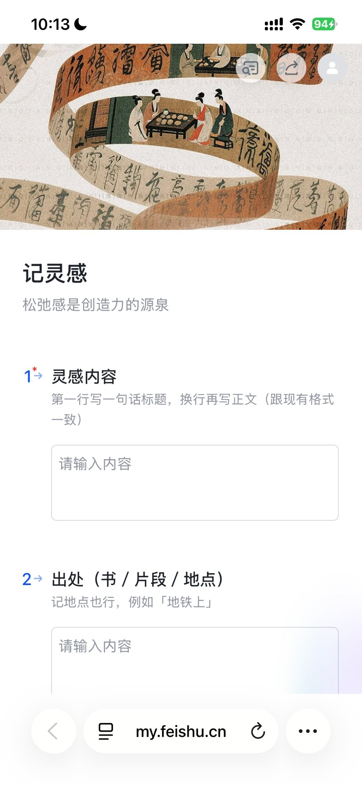
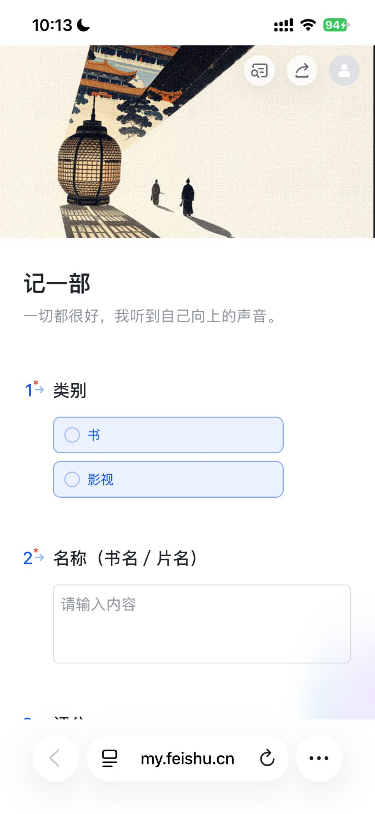
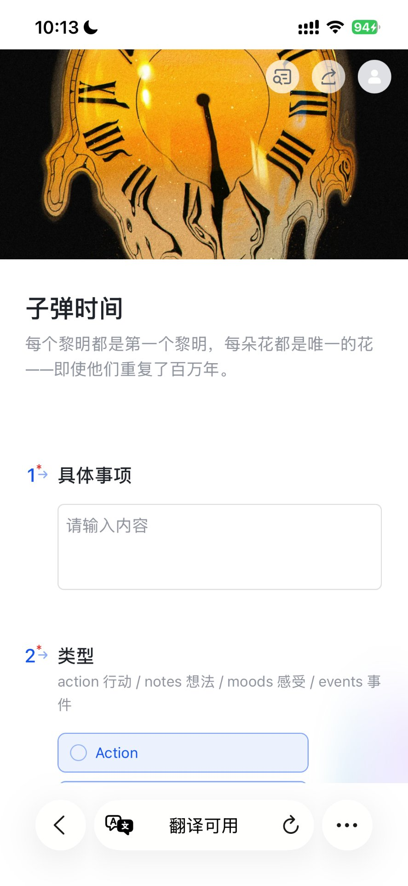
手机上一笔 10 秒记完，落进底表、自动算口径，晚上自动播报、月底自动出报表 —— 从记录到分析，中间没有任何手工整理
看钱真正花掉了多少，而不是流水动了多少
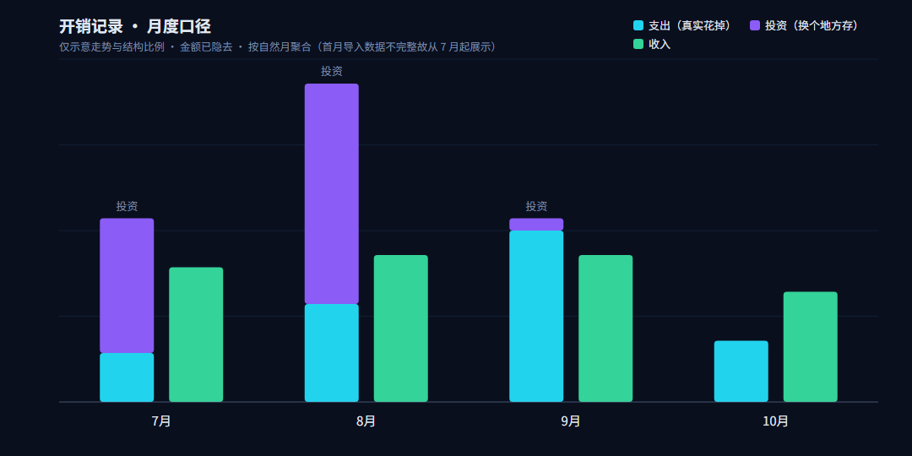
表单不是先攒着再导入，提交即落底表
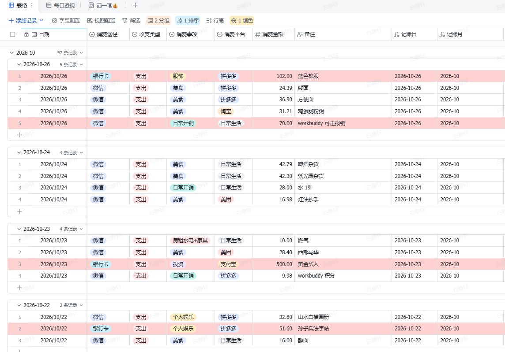
不用打开表，数字自己来找你
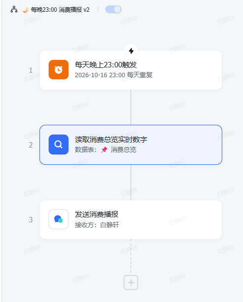
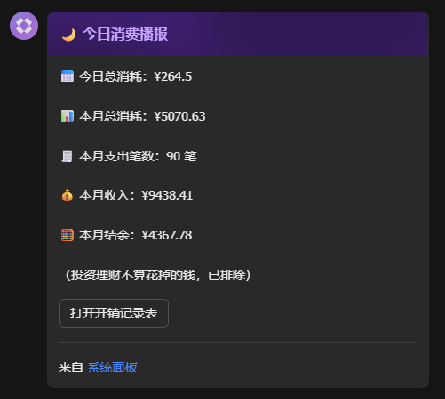
底表数据的可视化，自动聚合、实时更新
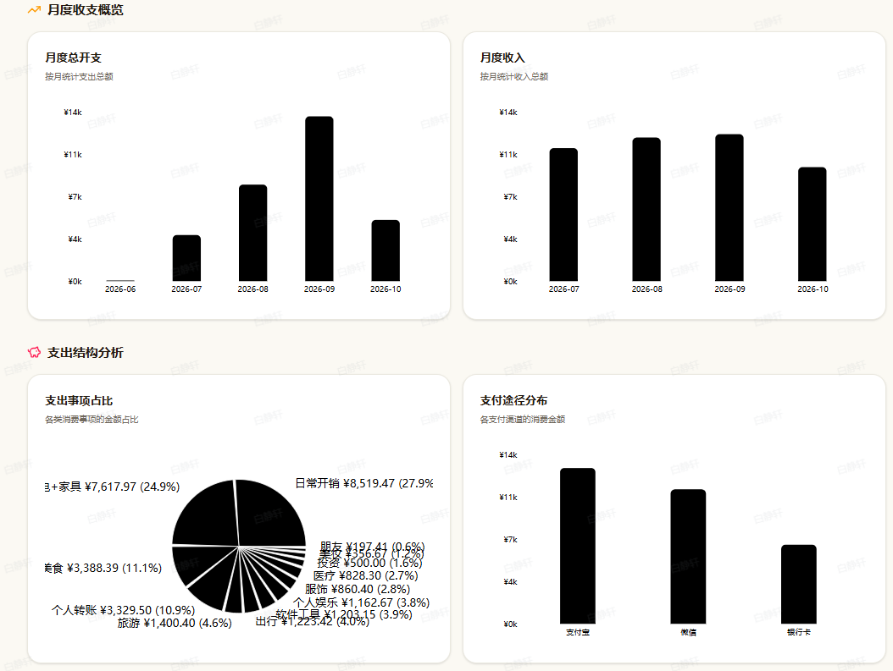
沿用国内外很火的「子弹时间记录法」：一天的每件事先归入维度（工作 / 生活 / 学习），再用四种状态标记它的走向 —— 记录的那一刻就已经想清楚这件事归谁、做不做、什么时候做
记录法本身很简单，难的是执行闭环
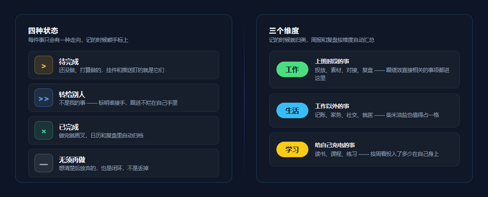
手机表单随手记，桌面挂件随时改，智能体盯着推
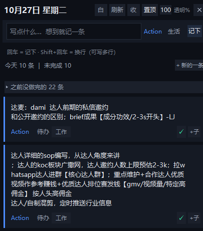
事件在底表里，闭环在推送里
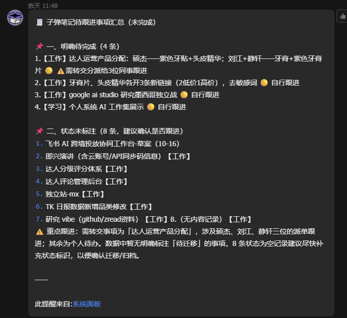
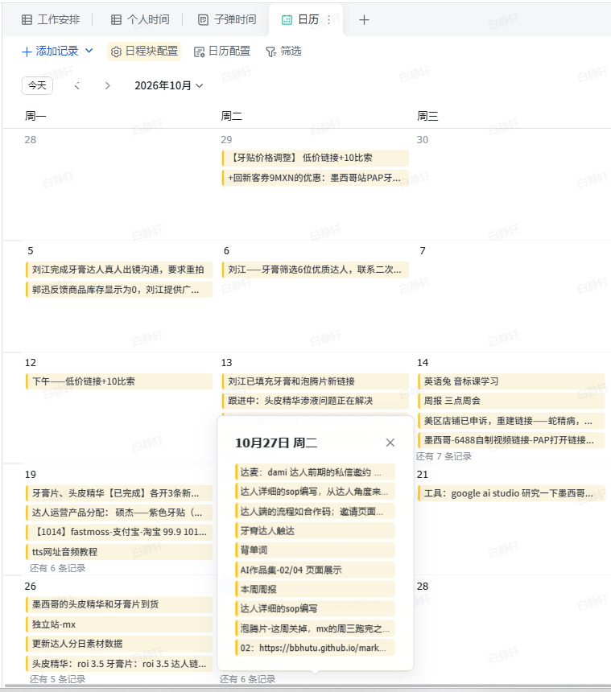
从记录、挂件操作到推送与日历，一镜到底
每个交易日收盘价自动入库（2022 年至今 1179 个交易日），电脑开机自启动、定时推送黄金日报到飞书 —— 日报里不只给数字，还给出判断依据和术语科普
行情、持仓、资讯各归其位，公式把它们连起来
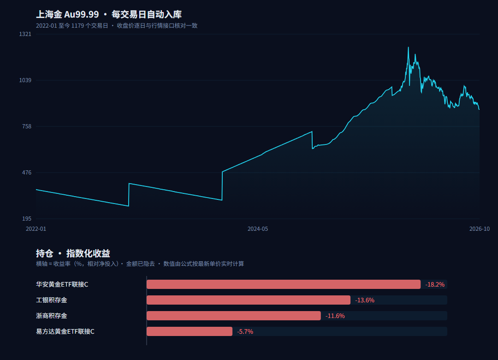
日报里的每个结论都有对应的可查依据，术语当天科普
开机自启动 + 定时推送，零人工干预
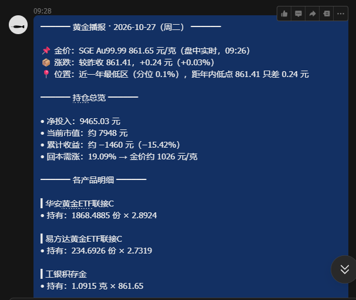
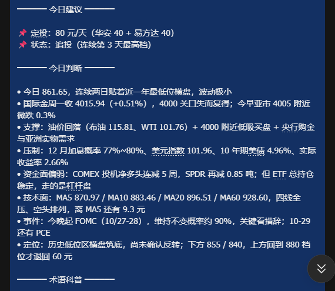